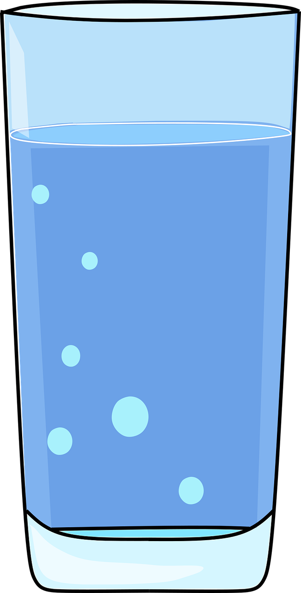

Water Facts
Why do we need to think about water?
I n the UK every person uses approximately 150 litres of water a day, a figure that has been growing
every year by 1% since 1930. If you take into account the water that is needed to produce the food and
products you consume in your day-to-day life (known as embedded water) you actually consume 3400 litres
per day.
This is quite alarming if you consider that the UK has less available water per person than most
other European countries. If you live in the South east of England it is even more so, as this part of the
country is the most water stressed.
Heating up water to take a shower or wash clothes in the washing machine not only impacts on your energy
bills, but also results in the release of greenhouse gases, linking it to climate change. As much as 25% of
your household’s energy bill comes from heating water, and domestic hot water accounts for 5%
of UK greenhouse gas emissions. In fact, water companies also use lots of energy treating and pumping cold
water, and this in turn releases even more greenhouse gases.
By making small behavioural changes and choosing more water efficient products you can save water with-
out sacrificing too much money, comfort, or level of service. Water efficiency is about reducing the
amount of water you waste on a daily basis, not restricting what you use.